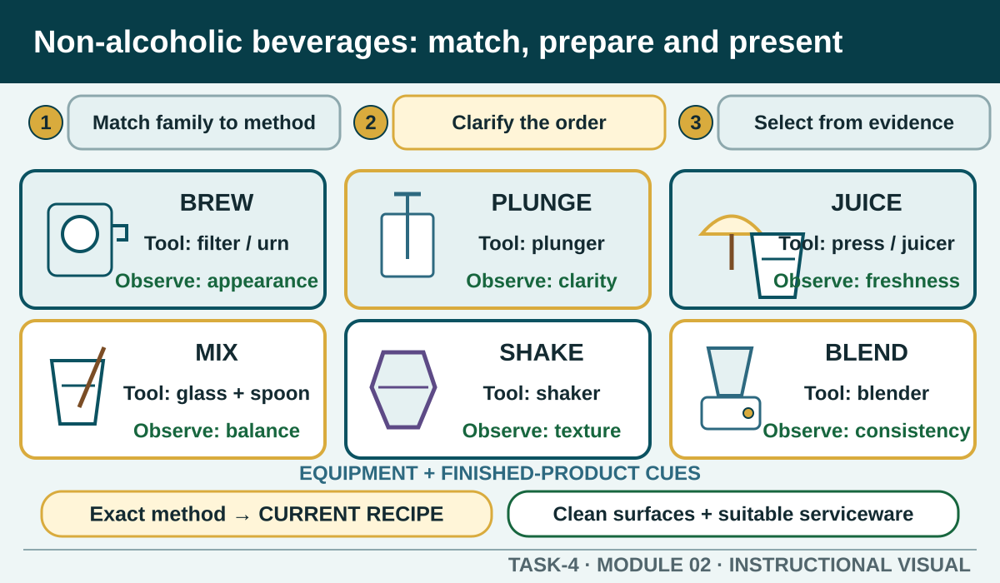

Prior learning
Recall the previous lesson and bring forward one question or completed learning artefact.
Task 4 · Lesson 2 of 8
Use customer questions, verified product knowledge and the authorised recipe to select ingredients and equipment, prepare non-espresso beverages and evaluate them before service.
Prior learning
Recall the previous lesson and bring forward one question or completed learning artefact.
Success criteria
Learning boundary
This lesson supports preparation and formative practice. The current authorised package and trainer/assessor control formal products, observations, dates and submission.
Non-alcoholic beverage work can include teas, non-espresso coffees, juices, smoothies, milk-based drinks, mixed cold beverages and other products on the authorised menu. Espresso beverages are handled through the separate espresso workflow because they require a commercial espresso machine and grinder.
Product knowledge is more than remembering a name. For each current beverage, know the approved ingredients, customer options, preparation method, equipment, serviceware, presentation features and information you are permitted to give. When a product is new or has changed, return to the current menu, recipe card and product information.
Customers often begin with broad language such as something refreshing, not too sweet or warm but not coffee. Use an open question to understand the goal, then closed questions to confirm relevant choices available on the current menu. Useful areas may include dietary needs, ingredient concerns, temperature, strength, ice, garnish, mixer, serviceware or an approved brand choice.
Do not infer a dietary need from appearance or promise that a product is suitable without verified information. Repeat the agreed choice and any modification so the customer, order record and preparation station share the same instruction.
Read the complete authorised recipe and order before collecting ingredients. Check that each ingredient is the correct product, is stored as directed, is suitable for use and matches the recorded customer request. Labels and approved product information are essential when a customer asks about ingredients or allergens.
If an ingredient is missing, substituted, unlabelled or uncertain, stop and use the workplace clarification process. An unauthorised substitution can change taste, dietary suitability, cost and presentation. It is better to delay and verify than to make a confident claim without evidence.
Select equipment of the correct type and useful capacity for the authorised method. Possible equipment may include a blender, juicer, shaker, mixing tools, brewing equipment or a plunger. The recipe and manufacturer instructions determine the correct selection and safe use.
Before use, check cleanliness, assembly, condition and any required guard, lid or control specified by the manufacturer or workplace. Do not operate unfamiliar, damaged or incorrectly assembled equipment. Keep food-contact parts protected and avoid cross-contact between incompatible tasks.
Common non-espresso methods include blending, brewing, juicing, mixing, plunging and shaking. Each method affects texture, extraction, dilution, temperature, appearance and service time differently. Use the method named in the current recipe rather than choosing by habit.
Sequence matters. Confirm the order, prepare clean serviceware, collect and measure ingredients using the authorised method, operate equipment safely, check the result, finish the presentation and hand over promptly. The exact quantities, timings and temperatures belong to the current recipe or product instructions and are deliberately not hard-coded here.
Check the beverage against the order and current standard. Observable checks may include the correct product and modification, strength, taste, temperature, appearance, texture, volume, clean serviceware, garnish or accompaniment and an undamaged presentation. Evaluate before service so a visible deficiency can be corrected through the authorised process.
Quality and waste are connected. Careful measuring, suitable equipment, stable sequencing and early checking reduce remakes and unnecessary ingredients. Do not rescue an incorrect beverage by hiding it with garnish, changing its name or serving it to someone else unless the workplace has an authorised safe use.
Phone view: swipe across the diagram, or use Open larger below.

Formative practice
Each option explains the workplace consequence. These responses save on this device.
Written application
Show the question-and-confirmation process. Do not invent ingredients, quantities, temperatures or a promise about dietary suitability.
Apply and keep evidence
Select clean, suitable serviceware and handling points for common non-alcoholic beverage categories.
Use the check result, activity record and written response as formative learning evidence only. Formal evidence remains controlled by the current package and trainer/assessor.
Authorised source note: Customer preference, ingredient and equipment selection, non-espresso methods, quality, presentation and waste are current unit-intent concepts. The actual products, recipes, measures, equipment and local procedures remain teacher-controlled. Source references: TAS-2026-2027, TEACHER-T4-TOPICS, TGA-SITHFAB024, SITE-T4-V2.